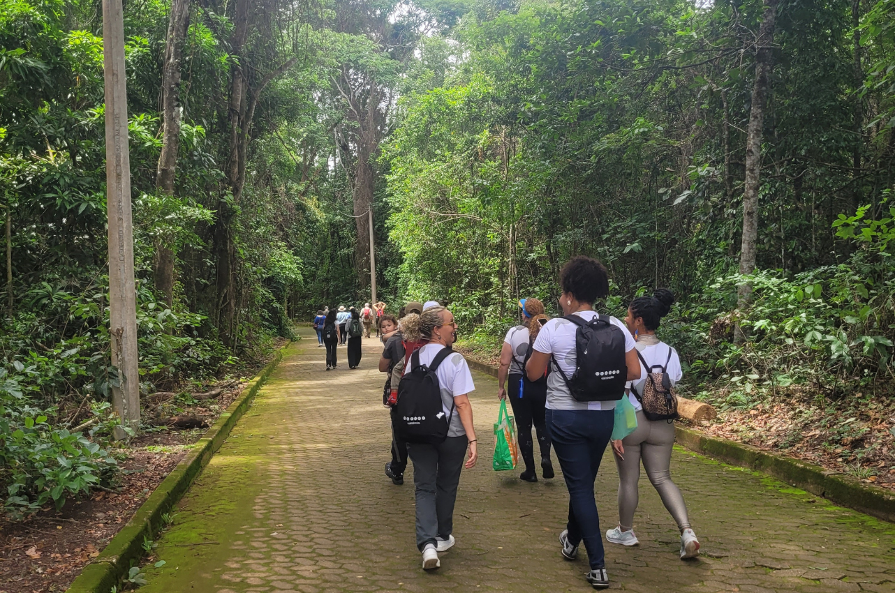

Próximos Eventos

JUl
04
Horário: 09:00
Observação de Aves na Mata Atlântica
Conheça as principais espécies de aves da região com acompanhamento de guias experientes. Ideal para quem curte o contato com a natureza e ama fotografar.
Inscreva-se

JUL
11
Horário: 10:00
Dia do Voluntariado Ambiental
Participe de ações de reflorestamento e limpeza em áreas do Parque. Contribua para a preservação!
Inscreva-se
JUL
18
Horário: 15:00
Workshop de Fotografia de Natureza
Aprenda a capturar paisagens e vida selvagem com técnicas práticas, guiado por fotógrafos especializados no tema.
Inscreva-se